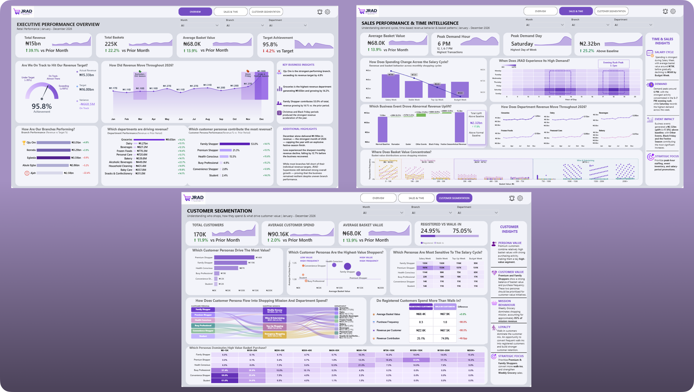
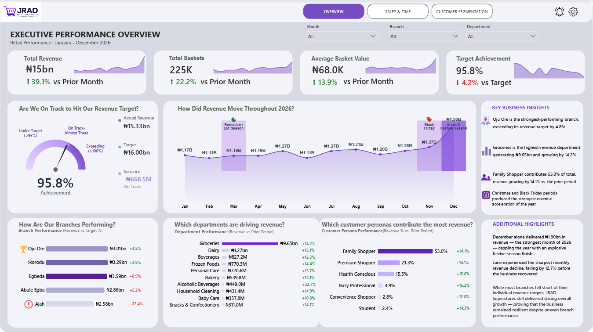
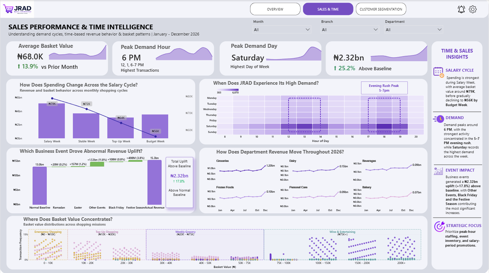
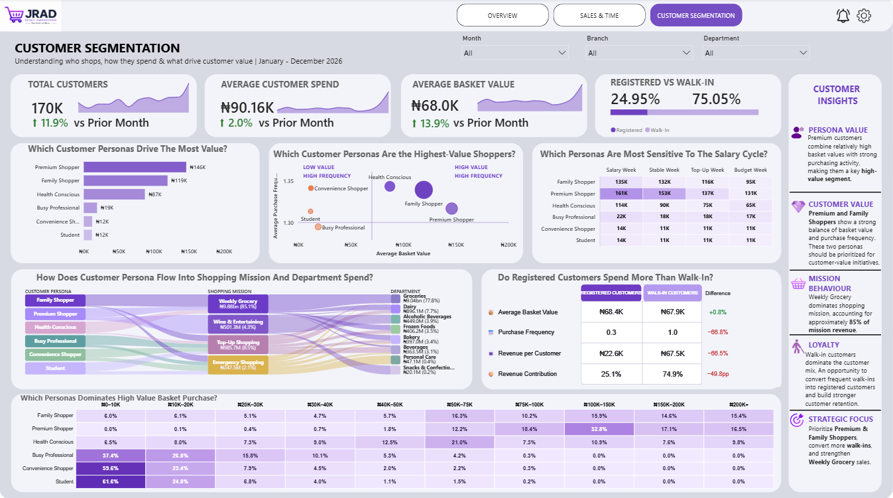
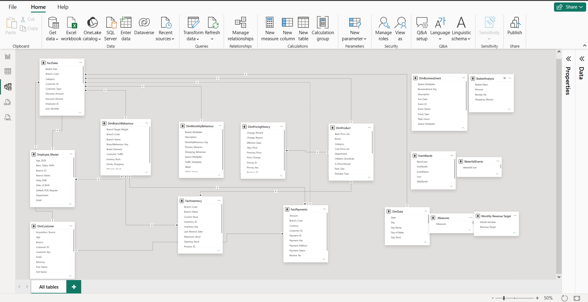

A 2026 retail intelligence solution built for JRAD Superstores, transforming full-year transaction data into an executive view of revenue performance, demand behavior and customer value.

A three-page executive Power BI solution built from the JRAD Superstores 2026 retail data ecosystem. The dashboard translates transactional data into decision-ready intelligence across business performance, demand timing and customer value.
The solution combines Power BI, DAX, time intelligence, Deneb / Vega-Lite, star-schema modelling and executive data storytelling to create a reporting experience designed for leadership decision-making.
A single-glance executive view answering the leadership question: how is the business doing?
Protect festive-season momentum, investigate the June slowdown, and tighten branch-level target setting to close the gap between company-wide growth and individual branch performance.


A demand-timing layer explaining when customers spend, how basket value changes through the salary cycle, and how events influence revenue.
Prioritize peak-hour staffing, event-driven inventory planning, and salary-cycle promotions to meet demand where it is concentrated.
A customer-value layer explaining who shops, how they spend, how frequently they purchase, and where value concentrates.
Prioritize Premium and Family Shopper segments, convert high-frequency walk-ins into registered customers, and reinforce Weekly Grocery as the core revenue driver.

The dashboard is powered by a star-schema architecture connecting sales, inventory, payments, customer, product, branch, business-event and pricing data into a unified analytical model.

The project combines analytical modelling, DAX, custom visual engineering and executive storytelling to move beyond a standard dashboard build.
End-to-end report development, modelling, visualisation and interactive analytics.
Dynamic growth measures, targets, gauges, conditional indicators and natural-language insight measures.
Fact and dimension modelling designed for analytical performance and maintainability.
Custom KPI cards, gauges, flow visuals and insight callouts beyond native Power BI visuals.
DAX-driven colour and arrow logic that updates automatically with the underlying data.
Structured visual hierarchy translating complex retail behaviour into decision-ready insight.
Explore the complete JRAD Superstores Power BI project, including the dashboard, DAX measures, Deneb specifications and data architecture.
View Project on GitHub